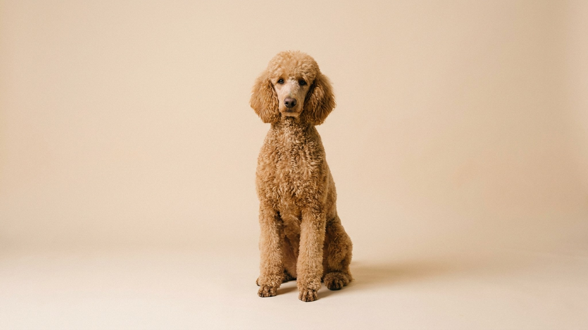

Пудель входит в тройку умнейших пород по классификации Стэнли Корена — и это накладывает обязательства на хозяина. Умная собака без дела превращается в изобретательного разрушителя: грызёт мебель, изводит соседей лаем, придумывает побеги. Ниже — что важно знать о характере, шерсти и размерах до того, как пудель переедет к вам.
🐾 Спросите AI-ветеринара прямо сейчас
AnimaLife — приложение, где AI-ветеринар отвечает на вопросы о кошке или собаке 24/7. Бесплатно, без записи и очередей.
Пудели официально делятся на четыре разновидности: той (до 28 см), малый (28–35 см), средний (35–45 см) и большой, или стандартный (от 45 см). Все четыре — полноценные пудели с одинаковым интеллектом, но разным уровнем физической энергии.
Выбирая размер, честно оцените свой темп жизни, а не только площадь квартиры. Той в однушке, которого выгуливают дважды по 10 минут, будет несчастнее стандартного с активным хозяином.
Одно из главных достоинств породы — пудель практически не линяет. Мёртвые волосы не осыпаются на диван, а остаются в завитках. Для людей с аллергией на шерсть пудель часто оказывается приемлемым вариантом (хотя реакция на слюну и эпителий у каждого своя — уточните у аллерголога).
Обратная сторона: без регулярного груминга шерсть сваливается в плотные колтуны за несколько недель. Минимальный уход — расчёсывание несколько раз в неделю и стрижка каждые 6–8 недель. Стрижка у грумера или дома — личный выбор, но пропускать её нельзя: запущенные колтуны болезненно стягивают кожу и ведут к воспалениям.
Пудель обучается командам быстрее большинства пород и запоминает их надолго. Это приятно — пока хозяин уделяет собаке время. Проблема начинается, когда интеллект остаётся без применения.
Пудель, которому скучно, демонстрирует это очень явно: начинает лаять, тревожиться при разлуке с хозяином, искать самостоятельные занятия — обычно деструктивные.
Помимо шерсти, пудель требует внимания к нескольким зонам:
Пудель — порода с долгой историей: эти собаки работали как охотники, циркачи и военные собаки. За декоративной внешностью стоит выносливый, умный партнёр. Если готовы вкладываться в груминг и умственную нагрузку — пудель ответит преданностью и лёгким обучением.
🐾 Дневник здоровья питомца — в кармане
Вес, прививки, симптомы и напоминания в одном приложении. AnimaLife следит за здоровьем питомца вместо вас.
🐾 Понравился разбор?
Подпишитесь на канал — каждый день разбираем по одному тревожному симптому у кошек и собак: что в пределах нормы, а когда пора к врачу. Подпишитесь, чтобы не пропустить разбор, который может спасти здоровье вашего питомца.
Материал носит информационный характер и не заменяет очную консультацию ветеринара.